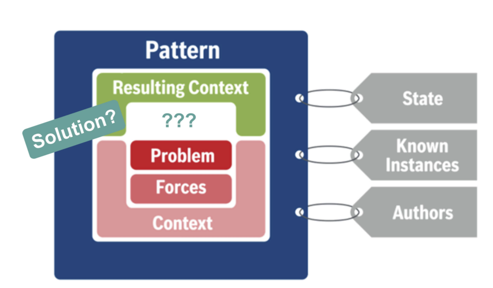
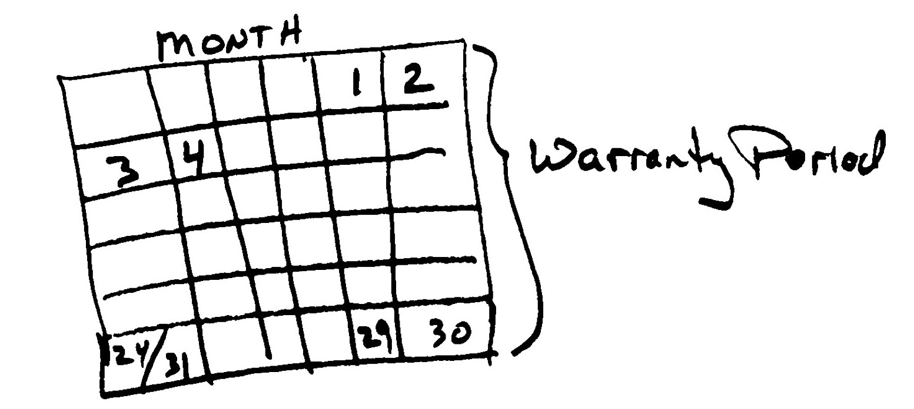

SOFTWARE DEVELOPMENT WITH ALTERNATIVE WORKFORCES
Most of the research on collaborative software development tends to
focus on collaborations within teams, between teams and among organizations.
In each of these scenarios, developers are employed, and are thus known and
"controllable" by their respective organizations. This project focuses on what
we call alternative workforces, which vary in much more dramatic ways than
the more traditional workforces described above. Some but not all developers
may be paid, developers may not be aware of each other (e.g. in a
competition-based crowdsourcing setting, but also in open source) and the
motivation and goals of developers may vary widely as well.
Alternative modes of software development such as open source, inner source and crowdsourcing
offer several benefits. For example, large communities may benefit from the fact that many
developers are able to review the code—this is often referred to as Linus’s Law (‘many eyeballs make all bugs shallow’).
Furthermore, inner source can significantly help organizations in ensuring timely delivery of their products to the market;
business units that find critical defects in a shared component shortly before a major release, can now fix issues themselves
(as inner source offers access to all source code), rather than being dependent on the owner of that component.
All three main modes listed above have the potential for creative, innovative or quality-improving solutions.
Much research on open source and derived initiatives (i.e. inner source, crowdsourcing) focuses on initial
adoption, but there is a paucity of research on sustainability of these initiatives.
Key questions are: How can sourcing strategies be sustained if an organization has little
influence on external workforces? And how can organizations build up sustainable relationships with unknown workforces?
Parameters for Crowdsourcing Software Development
Our multi-method study of crowdsourcing software development has focused on the various
challenges that companies may encounter. After our initial case study, we conducted a large-scale
sample study of over 13,600 contests on the Topcoder.com platform. The research model for this study is
shown in the figure below.
Key findings of this study include:
- Parallelization of contests within the same project is linked to a lower level of interest from the crowd;
- The level of reward for a contest doesn't seem to link to a higher level of interest from the crowd;
- So-called "crowd killers" may scare away other potential participants in contests.
The article is
freely available on the website of the IEEE and contains many other findings.
Innovative Work Behavior of Open Source Developers
Application developers constitute an important part of a digital platform's ecosystem.
Knowledge about psychological processes that drive developer behavior in platform
ecosystems is scarce. We build on the lead userness construct which comprises two
dimensions, trend leadership and high expected benefits from a solution, to explain how
developers' innovative work behavior (IWB) is stimulated. We employ an efficiency oriented and a social-political perspective to investigate the relationship between lead
userness and IWB. The efficiency-oriented view resonates well with the expected benefit
dimension of lead userness, while the social-political view might be interpreted as a
reflection of trend leadership. Using structural equation modeling, we test our model with
a sample of over 400 developers from three platform ecosystems. We find that lead
userness is indirectly associated with IWB and the performance-enhancing view to be the
stronger predictor of IWB. Finally, we unravel differences between paid and unpaid app
developers in platform ecosystems.
Onboarding Software Developers and Retaining Them
Onboarding is an extremely costly activity in software development because it can take months before software developers
become productive and start adding value. For that reason it is of particular interest to companies to understand how
to make the onboarding process more successful. After onboarding, companies also wish to retain their staff, as otherwise they
will have to recruit new staff and start the onboarding process over again. We conducted a sample study of over 100 developers to better
understand the onboarding process and the outcome of it.
Key findings of this study include:
- Orientation is important, but not as important as providing support to developers as they join the company. Training doesn't seem to be very important.
- When successfully onboarded (or socially integrated), developers tend to have a higher level of job satisfaction. Successful onboarding also links to better quality of relationships with colleauges.
- Job satisfaction is inversely linked to an intention to leave the company: satisfied developers will have a lower tendency to leave the company.
Patterns for Inner Source Collaboration
Inner Source has emerged as a popular software development paradigm. Many companies
are interested, but many are also struggling to implement it successfully. Several members of the Inner Source
Commons have developed a number of patterns that capture recurring problem and common solutions to those problems.
Some of these patterns are what we have called "donut-patterns"; that is, we observed recurring problems, but we haven't quite
identified a proper solution to the problem. Donut patterns are an invitation to others to think about the problem and
propose solutions that they might have used to address it.

Our paper in the International Conference on Pattern Languages of Programming (PLoP 2017) has documented a number of patterns.
One of these is called "30 Day Warranty", which suggests to set a limited time frame within which contributors offer "warranty" or support
to the team that has accepted the contribution. This may help reduce the barrier to accepting outside contributions.
